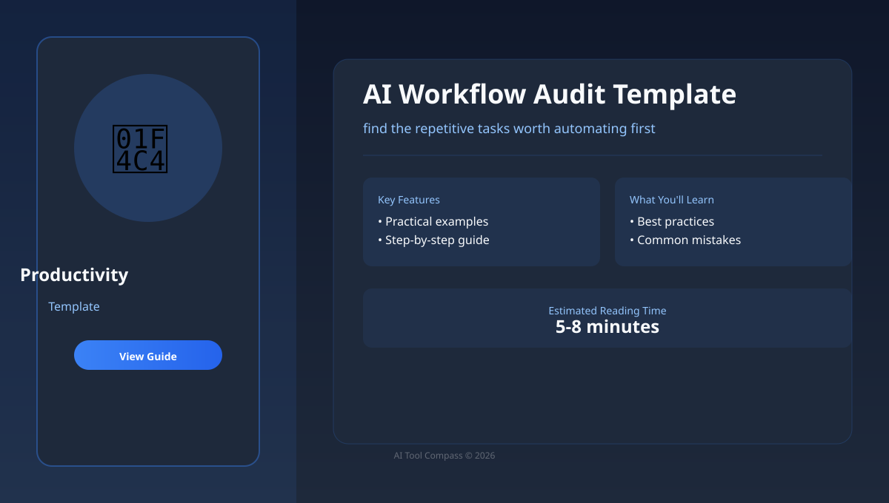

Template
AI Workflow Audit Template
This beginner-friendly guide shows how to find the repetitive tasks worth automating first with a practical template, original examples, community-inspired field notes, and clear review checkpoints before you rely on the output.
Disclosure: this page is independent editorial content. If affiliate links are added later, they should be clearly labeled beside the relevant recommendation.

Beginner summary
If you are new to ai productivity, start by naming the job in plain language. Do you need a draft, comparison, summary, image, video, transcript, code change, or repeatable business process? The tool only becomes useful after the task is clear.
For this topic, the core goal is to find the repetitive tasks worth automating first. A beginner should not start with every advanced feature. Start with one real example, compare the output against a requirement, and keep a small note of what worked so the workflow becomes repeatable.
Because this is a template page, the reader should be able to reuse the structure immediately. A good template separates fixed rules from fields the reader must customize. The best first win is not a perfect result; it is a repeatable process you can check.
Community-inspired field note
Community-inspired field note: Builder communities often recommend a low-budget indie stack: start with free tiers, simple analytics, cheap hosting, and a workflow you can maintain alone. For productivity AI, that means automating one painful repeatable task instead of building a complicated system on day one.
This page uses that lesson as source inspiration only. It does not copy forum images or long passages. The translated idea is turned into an original English tutorial structure: clarify the job, create a small spec, generate in sections, and keep human review in the loop.
Who this is for
This guide is for creators, students, freelancers, small business owners, and knowledge workers who want a practical template without needing technical background. It is also useful if you have tried Notion AI or Zapier once, got a mixed result, and want a calmer process.
- You want plain-English steps instead of buzzwords.
- You need to understand when Notion AI is enough and when another tool may fit better.
- You care about output quality, cost control, and avoiding common beginner mistakes.
- You want article-ready examples that can be reused in real work.
Step-by-step workflow
- Write the outcome. Describe the final result in one sentence: "I need to find the repetitive tasks worth automating first for a beginner audience." This prevents the tool from guessing the job.
- Collect context. Gather notes, examples, links, screenshots, constraints, and facts that cannot change. For coding or research tasks, include exact files or source URLs.
- Run a clarification pass. Ask Notion AI to list missing information and assumptions before producing the final output. This mirrors a /ask style workflow without needing a special tool.
- Create a small spec. Turn the clarified answer into a short spec: audience, input, output format, quality bar, risks, and review checklist. For coding, this can live in CLAUDE.md or a task note.
- Generate one section. Ask for one section, one image concept, one code function, one table, or one clip at a time. Smaller output is easier to check and revise.
- Review like an editor. Check accuracy, clarity, rights, privacy, tone, and whether the result actually solves the reader's task. Do not outsource judgment to the model.
- Save the reusable pattern. Keep the prompt, the accepted output, and the final edits. Over time this becomes a small personal low-budget stack playbook.
Why this workflow works
Productivity improves when AI is attached to a stable operating routine. A meeting note tool, task system, or automation should have a clear input, an owner, a review time, and a place where decisions live. Without that structure, the AI produces summaries that nobody trusts or uses.
A small team can begin by choosing one recurring task: weekly meeting summaries, email triage, or content planning. Keep the first workflow manual plus AI-assisted. When the output is reliable for two or three weeks, then add automation with tools such as Zapier or a workspace AI assistant.
The key detail is to keep decisions visible. Write down why you chose Notion AI over Zapier, what you asked it to do, and which checks passed. This creates original editorial value for a website because readers can see the reasoning, not just the final recommendation.
Tool comparison
The table below is not a permanent ranking. AI products change quickly, so treat it as a selection framework. The practical question is not "which tool is famous?" but "which tool gives the clearest result for this exact job?"
| Tool | Best beginner use | How to test it |
|---|---|---|
| Notion AI | Best when you need a flexible starting point for notes, meetings, automations, task systems, and team operating workflows. | Use it for planning, first drafts, and review questions; verify any current details. |
| Zapier | Best when the interface or workflow matches the specific job more closely. | Test it with the same brief you gave Notion AI, then compare output quality and time saved. |
| Microsoft Copilot | Best as a second opinion or specialist option after the basic low-budget stack test. | Keep it only if it solves a repeated problem better than your current tool. |
Mini case study
Assume you are building a small English guide site and this page is one article in the cluster. The weak version says: "Here are some AI tools." The stronger version gives a real workflow, a decision table, a reusable prompt, and a warning box that tells beginners where they are likely to fail.
For AI Workflow Audit Template, the article should answer one practical reader question: "How do I find the repetitive tasks worth automating first without wasting time or trusting output blindly?" Every section should serve that question. If a paragraph does not help the reader decide, perform, verify, or avoid a mistake, cut it or rewrite it.
When monetization is added later, keep the ad unit outside the explanation flow. A display ad can sit between major sections, but it should not interrupt the checklist or make an affiliate link look like an editorial verdict. Helpful structure is what makes the page eligible for long-term traffic.
Example prompt or brief
Copy this structure and replace the bracketed details with your own. It works because it gives the AI a role, a task, constraints, and a checking standard.
Act as a practical productivity assistant.
Goal: help me find the repetitive tasks worth automating first.
Audience: beginner with no technical background.
Inputs: [paste notes, links, files, product details, or rough ideas].
Context method: use free tier thinking, then produce a short spec before the final answer.
Output format: step-by-step guide with a short summary, a comparison table, common mistakes, and a final checklist.
Quality bar: explain trade-offs clearly, flag uncertain claims, avoid hype, and tell me what a human should verify.Common mistakes
Mistake 1
Automating a messy process before the team agrees what good output looks like. Fix it by asking for missing requirements and a short plan before output.
Mistake 2
Connecting too many apps and making failures difficult to diagnose. Fix it by checking claims, links, calculations, rights, and anything that affects a real decision.
Mistake 3
Paying for tools before the free tier proves the workflow saves time. Fix it by saving the accepted prompt, final output, and your human edits.
- Using a vague request. "Make this better" gives the tool too much room. Explain what better means.
- Skipping source checks. For facts, prices, policies, or current product features, verify with official pages before publishing.
- Buying too early. Test the free tier or trial with your real task before committing to a paid plan.
- Ignoring rights and privacy. Do not upload private customer data, confidential documents, or media you do not have permission to use.
- Publishing generic output. Add your examples, screenshots, judgment, and final edits so the page has original value.
Quality bar before publishing
Start with a free tier pilot, write the review rule, then automate only the stable step. This is the minimum bar for a page that aims to win search traffic and qualify for monetization later. Search engines and ad networks both reward pages that provide clear value, not pages that merely repeat tool names.
| Check | Pass condition | Beginner action |
|---|---|---|
| Usefulness | The reader can complete one task after reading. | Add a concrete example, prompt, or checklist. |
| Originality | The page adds judgment, structure, or field notes. | Include your own test result or decision rule. |
| Trust | Claims are either verified or clearly marked as uncertain. | Check current facts against official pages before updating. |
| Monetization | Ads and affiliate links are disclosed and separated from advice. | Keep recommendations useful even without commissions. |
Final checklist
- The task is written in one clear sentence.
- The prompt includes audience, constraints, and output format.
- Important facts and claims have been checked against reliable sources.
- The output has been edited by a human for clarity and usefulness.
- Any affiliate or sponsored recommendation is clearly disclosed near the link.
- The workflow includes a saved prompt pattern, a review rule, and a next-step note.
FAQ
What is the easiest way to start?
Start with one real task you already need to finish. A small real example teaches more than testing random prompts.
Do I need paid AI tools?
Not at first. Paid plans are worth considering only when limits, quality, or collaboration features block repeated work.
Can I trust the output immediately?
No. Treat AI output as a draft or assistant result. Check facts, links, calculations, visual details, and any claim that could affect a decision.
Why include community-inspired field notes?
They turn broad tool advice into practical working habits. The goal is not to copy a forum post, but to translate useful patterns into original English guidance that helps a beginner avoid predictable mistakes.